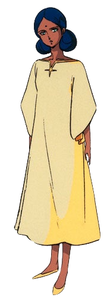
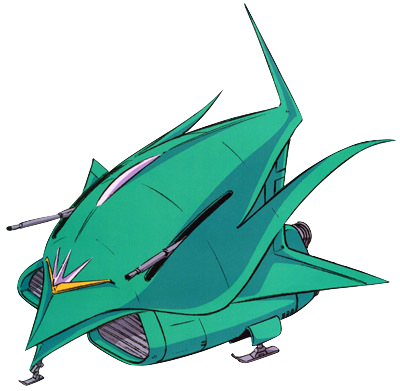

Lala Sun
Information
Story
Age : 17
gender : Female
Height : 167cm
Nationality : Principality of Zeon
Birthday : 62/November/21th
Favorite food : Soba
Hobby : Not sure
Personality : Methodical
Lalah Sune was a young Esper girl taken in by Zeon's top ace pilot, Char Aznable, in the Mobile Suit Gundam franchise. She had psychic abilities and piloted the Newtype Gundam, ultimately sacrificing herself to save Amuro Ray's life in the final battle.
 